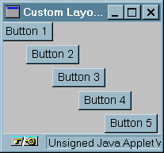

GUI: Layout Managers |

To create a new Layout Manager:A layout manager has just to implement the LayoutManager Interface.
The LayoutManager interface:
- public void addLayoutComponent(String name, Component comp)
- Called only by the Container add(name, component) method. Layout managers that don't require that their components have names generally do nothing in this method.
- public void removeLayoutComponent(Component comp)
- Called by the Container remove() and removeAll() methods. Layout managers that don't require that their components have names generally do nothing in this method, since they can query the container for its components using the Container getComponents() method.
- public Dimension preferredLayoutSize(Container parent)
- Called by the Container preferredSize() method. This method should calculate the ideal size of the parent, assuming that the components it contains will be at or above their preferred sizes.
- public Dimension minimumLayoutSize(Container parent)
- Called by the Container minimumSize() method. This method should calculate the minimum size of the parent, assuming that the components it contains will be at or above their minimum sizes.
- public void layoutContainer(Container parent)
- Called when the container is first displayed, and every time its size changes. A layout manager's layoutContainer() method doesn't actually draw Components. It simply invokes each Component's resize(), move(), and reshape() methods to set the Component's size and position.